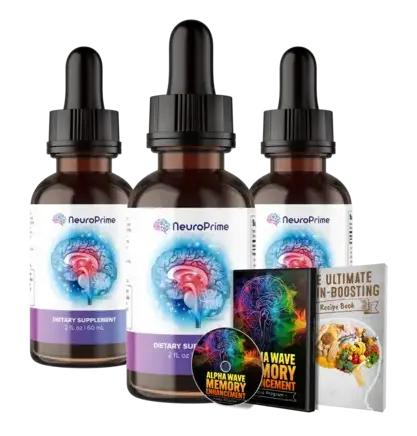

Promote NeuroPrime Now!
Product profile · Marketplace data 2026-10-09 · Sales-page research 2026-10-09 · Categories: Food Supplements

Marketplace record
| Product type | Supplements - health |
|---|---|
| Price | $274.63 (Single payment) |
| Affiliate commission | 60% |
| Refund window | Per the vendor's sales page — check the official page before buying |
| Vendor | zenmavibe (listed since 2024-09-16) |
| Marketplace stats* | Cart conversion 8% · cancel rate 5.55% · affiliate earnings/sale $76.00 |
* Vendor-side marketplace statistics reported by Digistore24; they depend on traffic quality and are not a forecast.
Vendor's marketplace description
Brand New & Unique Premium Brain Health Supplement!$2+ EPCs and up to 3% conversions from top affiliates! $300 AOV! Unique custom formulation creates REAL results with super LOW refunds! Convert your clicks to CASH now! Irresistible hook and story creates $$$!
From the vendor's sales page
Page title: The NeuroPrime
Meta description: The NeuroPrime
Section headlines
- LEAKED BY TOP HARVARD NEUROSURGEON:
- Urgent: Scientists Uncover a Natural Memory-Loss Remedy You Can Make at Home. Already Transforming 89,000+ Lives --> <!--
- Inside every NeuroPrime XT drop, you’ll find:
- Check what our customers say about NeuroPrime XT:
- Question 1: How does NeuroPrime XT work to boost my memory?
- Question 2: Who can benefit from taking NeuroPrime XT?
- Question 3: How long does NeuroPrime XT take to arrive?
- Question 4: Is there a money-back guarantee?
- Question 5: How long will NeuroPrime XT be available?
- Question 6: I’m in! What do I do next?
Prices mentioned on the page: $69 · $99 · $9.99 · $49 · $594 · $294 · $59 · $297 · $177 · $47.00 · $67.00 · $97
Guarantee language found: “365” — always confirm the current terms on the official page before relying on it.
CTA buttons: “Click Here To Reveal!” · “add to cart” · “Yes! I'm Ready To Try NeuroPrime XT!”
Opening copy
WAIT! You’re Just 0:00 Away From the ‘3-Second Tonic’ Leaked by a Top Harvard Neurosurgeon That Reverses Senior Memory Loss!
Take the guesswork out of your journey and unlock NeuroPrime XT’s full potential from day one. This expert-designed guide ensures faster, stronger cognitive enhancement by helping you seamlessly integrate NeuroPrime XT into your routine.
Fuel your brain for limitless focus, memory, and cognitive power with science-backed superfoods. This expert-crafted guide unlocks the key nutrients and recipes proven to sharpen thinking, boost recall, and enhance mental clarity.
Research method: raw HTML fetch · 1478 words on page · quality: rich · researched 2026-10-09. Full research file (MD) ↗
Where to check it out
Read the vendor's full sales page (current price, guarantee terms and bonuses are listed there):
View official sales page
That link is an affiliate link — if you buy through it we earn a commission from the vendor at no extra cost to you.